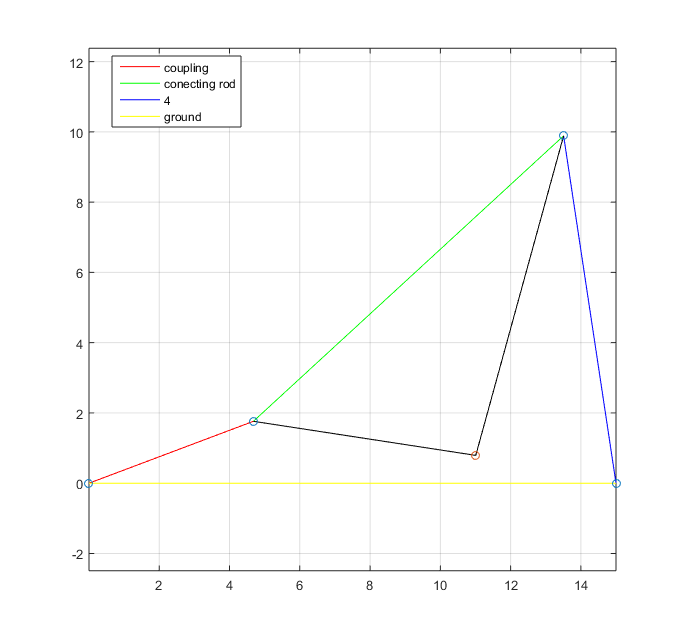
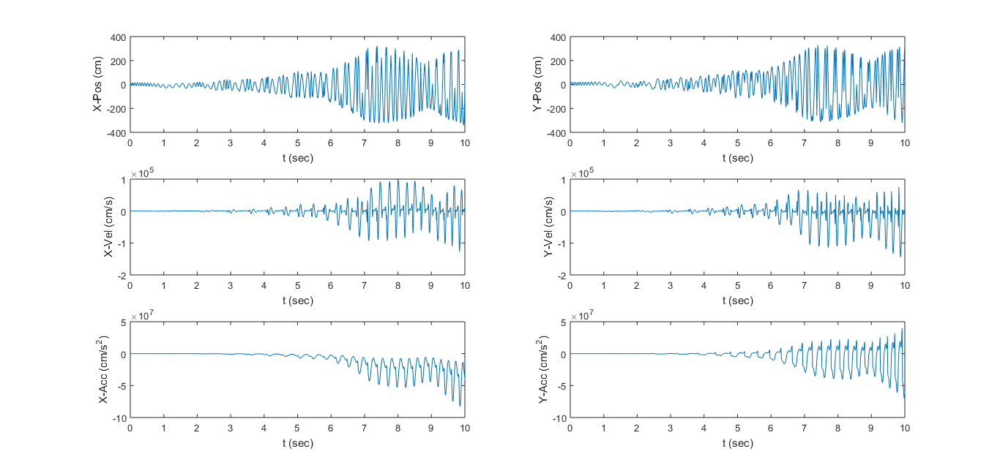

Contents
HW 7 #1
clear; clc; clf;
Given
angles = [0, 0, 15, 20];
omega2 = 0;
alpha2 = rad2deg(1);
lengths = [15, 5, 12, 10];
p = [4, -5];
options = [0, 0, -1];
Advancement Through Time
Ts = .01;
t = 0:Ts:10;
omega2 = alpha2*t;
theta2 = alpha2*(1/2)*t.^2 + omega2.*t;
alpha2 = alpha2*ones(size(t));
Calculate
[angles, angularVelocity, angularAcceleration, lengths, linearVelocity, linearAcceleration, points, p, vp, ap] = four_bar_func([0 theta2(50) 0 0], omega2(50), alpha2(50), lengths, p, [1, 0, -1]);
for i=1:length(t)
[angles, angularVelocity, angularAcceleration, lengths, linearVelocity, linearAcceleration, points, p, vp, ap] = four_bar_func([0 theta2(i) 0 0], omega2(i), alpha2(i), lengths, p, options);
calcAngVel(i) = angularVelocity(2);
calcLinVel(i, :) = linearVelocity(2, :);
calcP(i,:) = p;
calcVP(i,:) = vp;
calcAP(i,:) = ap;
end
figure(2); clf;
subplot(3,2,1)
plot(t, calcP(:,1));
xlabel('t (sec)');
ylabel('X-Pos (cm)');
hold on;
subplot(3,2,2)
plot(t, calcP(:,2));
xlabel('t (sec)');
ylabel('Y-Pos (cm)');
subplot(3,2,3)
plot(t, calcVP(:,1));
xlabel('t (sec)');
ylabel('X-Vel (cm/s)');
subplot(3,2,4)
plot(t, calcVP(:,2));
xlabel('t (sec)');
ylabel('Y-Vel (cm/s)');
subplot(3,2,5)
plot(t, calcAP(:,1));
xlabel('t (sec)');
ylabel('X-Acc (cm/s^2)');
subplot(3,2,6)
plot(t, calcAP(:,2));
xlabel('t (sec)');
ylabel('Y-Acc (cm/s^2)');
 